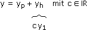
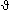

XIV. DIFFERENZIALGLEICHUNGEN
A. Einführung und Klassifikation
B. Lineare DG 1. Ordnung
C. Lineare DG 2. Ordnung
D. Praktische Anwendungen
E. Exkurs: Differenzengleichungen
 Ergänzungen und Details
Ergänzungen und DetailsBei einer "normalen" Gleichung werden bekannte Zahlen und Platzhalter für Zahlen zusammengerechnet, bei einer Differenzialgleichung wie
y' + 3xy2 = 0
sind es bekannte x-Terme und Platzhalter für x-Terme, die – wie der Name sagt – auch differenziert werden. In unserem Fall wäre etwa

eine Lösung der Gleichung – allerdings nur eine partikuläre Lösung. Die Zusammenfassung aller Lösungen heißt allgemeine Lösung. Wenn an die Lösung weitere Bedingungen geknüpft sind, wie vorgegebene Funktionswerte und/oder Ableitungen an bestimmten Stellen, bildet die allgemeine Lösung den Pool, in dem wir die spezielle Lösung finden.
Bem: Klarer, weil wir dann nicht aus dem Kontext schließen müssen, wofür y steht, ist die Schreibweise
y'(x) + 3xy(x)2 = 0
Aufgabe 1: Charakterisiere folgende t-Terme über ihre DG (was den Sachverhalt einfacher charakterisiert als die explizite Funktionsgleichung):
a) y(t) = y0e–tτ = exponentieller Zerfall
b) y(t) = rsin(ωt+φ) = sinusförmige Wechselgröße
a) y(t) = y0e–tτ = exponentieller Zerfall
b) y(t) = rsin(ωt+φ) = sinusförmige Wechselgröße
a) y' = –
y0
τ
1
τ
 y' +
y' + 1
τ
b) y' = rωcos(ωt+φ) y" = –rω2sin(ωt+φ) = –ω2y y"+ω2y = 0
y" = –rω2sin(ωt+φ) = –ω2y y"+ω2y = 02 Richtungsfeld
Die allgemeine Lösung unseres Einführungsbeispiels können wir genauso veranschaulichen wie Physiker ein Magnetfeld mit Hilfe von Eisenfeilspänen: Wir stellen y' frei und zeichnen in den Punkten der xy-Ebene Geradenstücke mit der entsprechenden Steigung ein. Aus einem solchen Richtungsfeld die x-Terme abzulesen, die die allgemeine Lösung bilden, gelingt aber nur in einfachen Fällen.
Aufgabe 2: Zeichne die Richtungsfelder und lies daraus die allgemeine Lösung der DG ab:
a) y' =
b) y' =
c) y' = –
1
2
y
x
x
y
y = x + c
y = cx
y = ±√c2 – x2
1
2
Bem: Punkte ohne Steigung heißen singulär, in b) ist das ein Strahlpunkt, in c) ein Wirbelpunkt.
3 Trennung der Variablen
Eine DG 1. Ordnung heißt separierbar, falls das freigestellte y' ein Produkt aus x-Term und y-Term ist. In diesem Fall schreiben wir y' als dy/dx, tun so, als ob wir dy und dx trennen können, bringen die x-Teile auf die eine Seite und die y-Teile auf die andere (Trennung der Variablen) und setzen das Integralzeichen vor beide Seiten:
dy
dx
1
h(y)
h(y)dy = g(x)dx
 (.)h(y)dy = g(x)dx y freistellen
(.)h(y)dy = g(x)dx y freistellenZum Beweis differenzieren wir das nach x:
d
dy
h(y)dy·dy
dx
d
dx
g(x)dx h(y)dy
dx
Aufgabe 3: Bestimme die allgemeine Lösung der DG: y' + 3xy2 = 0
dy
dx
y–2dy = –3xdx (.)
(.)y–1
–1
x2
2
1
y
3x2 – 2c3
2
y = mit c 
 oder y = 0
oder y = 0
2
3x2 + c
oder y = 0
4 Klassifikation
Im Folgenden behandeln wir gewöhnliche DGen, das sind solche, bei denen Funktionen in einer Variablen gesucht sind. Bei partiellen DGen geht es um Funktionen in mehreren Variablen. Die Ordnung einer DG ist die höchste Ableitung, in der die Variable vorkommt.
Aufgabe 4: Klassifiziere im Hinblick auf gewöhnliche/partielle DG und Ordnung:
a) y' + (1 + x)y2 = sinx
b) + · = 1
c) x3y" – ex(y' + y)2 = 0
∂z
∂x
4z
x2 + y2
∂z
∂y
a) gewöhnliche DG 1. Ordnung b) partielle DG 1. Ordnung c) gewöhnliche DG 2. Ordnung
• Von einer linearen DG sprechen wir, wenn Ableitungen von y mit x-Termen multipliziert, dann addiert und einem x-Term gleichgesetzt werden.
| fn(x)y(n) + ... + f0(x)y = s(x) |

|
s(x) = 0 ... homogene lineare DG s(x) ≠ 0 ... inhomogene lineare DG |
Aufgabe 5: Klassifiziere im Hinblick auf Linearität und Homogenität:
a) 3xy' + 2y = yex b) y" + xy2 = 0 c) y" + y2 = (x – y)(1 – y)
a) 3xy' + 2y = yex b) y" + xy2 = 0 c) y" + y2 = (x – y)(1 – y)
a) 3xy' + (2 – ex)y = 0
homogene lineare DGb) y" + xy2 = 0
nichtlineare DGc) y" + (x + 1)y = x
inhomogene lineare DG5 Superpositionsgesetz
Wenn wir in einer linearen DG n-ter Ordnung
fn(x)y(n) + ... + f0(x)y = s(x)
die Störfunktion s(x) durch 0 ersetzen, erhalten wir die "verkürzte DG"
fn(x)y(n) + ... + f0(x)y = 0 mit Lösungsmenge Lh.
Damit brauchen wir nur mehr eine partikuläre Lösung yp der "vollständigen" DG und können deren Lösungsmenge L durch Superposition bilden:
• L = { yp+yh | yh
 Lh }
Lh }Beweis:
Wenn yp
L und yh Lh, dann ist yp+yh L, weil:Wenn y
L und yp L, dann ist y–yp Lh (also y = yp+yh), weil:Nach Division durch den Hauptkoeffizienten schaut eine lineare DG 1. Ordnung so aus:
y' + f(x)y = s(x)
Separierbar, also durch Trennung der Variablen lösbar, ist sie nur, wenn s(x) ∼ f(x). Ansonsten gehen wir schrittweise vor:
1 Lösung der verkürzten DG
Die verkürzte DG
dy
dx
ist separierbar, also:
dy
dx
dy
dx
(.)ln|y| = –F(x) + c3 e(.)
|y| = e–F(x)+c3 c4 = ec3
y = ±c4e–F(x) c = ±c4 oder 0 (für y = 0)
yh = ce–F(x) mit c
2 Variation der Konstanten
Jede Funktion y(x) lässt sich "à la homogene Lösung" schreiben, wenn wir die Konstante c durch einen Term c(x) ersetzen:
y = c(x)e–F(x)
Insbesondere lassen sich alle y(x) so schreiben, die – in die vollständige DG eingesetzt – diese erfüllen:
c'(x)e–F(x) + c(x)e–F(x)(–f(x)) + f(x)c(x)e–F(x) = s(x)
c'(x) = s(x)eF(x)
Die in c(x) enthaltene Intergrationskonstante würde die allgemeine Lösung der vollständigen DG liefern. Zwecks einheitlicher Vorgehensweise (siehe Ansatz à la Störfunktion) lassen wir aber die Intergrationskonstante weg und kombinieren die sich ergebende partikuläre Lösung mit der allgemeinen Lösung der homogenen DG (Superpositionsgesetz).
Aufgabe 6: Bestimme die allgemeine Lösung der DG: y' + 2xy = xex(1–x)
Schritt 1: Lösung der verkürzten DG
dy
dx
dy
dx
(.)
ln|y| = –x2 + c3 e(.)
|y| = e–x2+c3 c4 = ec3
y = ±c4e–x2 c = ±c4 oder 0 (für y = 0)
yh = ce–x2 mit c
Schritt 2: Variation der Konstanten
y = c(x)e–x2  vollständige DG
vollständige DG
vollständige DGc'(x)e–x2 + c(x)e–x2(–2x) + 2xc(x)e–x2 = xex–x2 |·ex2
c'(x) = xexyp = (xex–ex)e–x2
Schritt 3: Superpositionsgesetz
y = yp + yh = (xex–ex)e–x2 + ce–x2 mit c
3 Ansatz à la Störfunktion
Bei einer linearen DG mit Zahlen als Koeffizienten
y' + py = s(x)
merken wir uns zum einen den eλx-Ansatz als Lösung der verkürzten DG:
λeλx + peλx = 0 λ = –p
λ = –pZum anderen gibt es für die wichtigsten Störfunktionen daran angepasste Ansätze, um eine partikuläre Lösung der vollständigen DG zu erhalten:
s(x) = anxn + … + a0
yp = Anxn + … + A0s(x) = aeαx
yp = Aeαxs(x) = acosβx+bsinβx
yp = Acosβx+BsinβxBem: Bei Summen/Produkten dieser Störfunktionen nehmen wir die Summen/Produkte ihrer Ansätze.
Aufgabe 7: Bestimme die allgemeine Lösung der DG: y' + 4y = 32x2
Schritt 1: eλx-Ansatz
verkürzte DG
λeλx + 4eλx = 0 λ = –4
λ = –4yh = ce–4x mit c
Schritt 2: Ansatz à la Störfunktion
yp = Ax2 + Bx + C
vollständige DG2Ax + B + 4Ax2 + 4Bx + 4C = 32x2
yp = 8x2 – 4x + 1
Schritt 3: Superpositionsgesetz
y = yp + yh = 8x2 – 4x + 1 + ce–4x mit c
Bei den linearen DG 2. Ordnung beschränken wir uns von vornherein auf Zahlen als Koeffizienten:
y" + py' + qy = s(x)
1 Struktur der Lösungen
So wie die allgemeine Lösung einer linearen DG 1. Ordnung

eine Gerade im reellen Vektorraum der Funktionen darstellt, ist die allgemeine Lösung einer linearen DG 2. Ordnung eine Ebene:
2 Lösung der verkürzten DG
Um die Spannvektoren y1,2 zu bekommen, gehen wir mit dem eλx-Ansatz in die verkürzte DG:
λ2eλx + pλeλx + qeλx = 0
a) aperiodischer Fall: zwei reelle Lösungen λ1, λ2
yh = c1eλ1x + c2eλ2x mit c1,2
b) aperiodischer Grenzfall: eine reelle Doppellösung λ
Der eλx-Ansatz liefert hier nur eine Lösung, aber wenn wir diese mit x multiplizieren, erhalten wir eine zweite:
y = xeλx
verkürzte DG 
yh = c1eλx + c2xeλx mit c1,2
c) periodischer Fall: konjugiert komplexe Lösungen α ± jβ
Die komplexe Lösung erfüllt zwar die Gleichung, aber wir suchen reelle Lösungen und finden solche in den Komponenten der komplexen Lösung:
y = e(α±jβ)x = eαxe±jβx = eαxcosβx ± jeαxsinβx
verkürzte DG Re = 0, Im = 0yh = c1eαxcosβx + c2eαxsinβx mit c1,2
3 Variation der Konstanten
Jede Funktion y(x) lässt sich "à la homogene Lösung" schreiben, wenn wir die Konstanten c1,2 durch Terme c1,2(x) ersetzen. Zudem können wir c1,2(x) so wählen, dass in y' alle Teile mit c1,2'(x) verschwinden:
y = c1(x)y1 + c2(x)y2
y' = c1'(x)y1 + c1(x)y1' + c2'(x)y2 + c2(x)y2'
(Zum Beweis, dass es solche c1,2(x) gibt, brauchen wir sie nur aus obigen Gleichungen herauszurechnen.) Insbesondere lassen sich alle y(x) so schreiben, die die vollständige DG erfüllen. Zusammengefasst haben wir also folgende Forderungen an c1,2(x):
(1) c1'(x)y1 + c2'(x)y2 = 0
(2) c1'(x)y1'+c1(x)y1"+c2'(x)y2'+c2(x)y2"+pc1(x)y1'+pc2(x)y2'+qc1(x)y1+qc2(x)y2 = s(x)
Über die Cramer'sche Regel können wir unmittelbar ablesen:
c1'(x) = und c2'(x) =
–s(x)y2
y2'y1–y2y1'
s(x)y1
y2'y1–y2y1'
a) aperiodischer Fall: y = c1(x)eλ1x + c2(x)eλ2x
y2'y1–y2y1' = λ2eλ2xeλ1x – eλ2xλ1eλ1x = eλ1xeλ2x(λ2–λ1)
c1'(x) =
–s(x)e–λ1x
λ2–λ1
s(x)e–λ2x
λ2–λ1
b) aperiodischer Grenzfall: y = c1(x)eλx + c2(x)xeλx
y2'y1–y2y1' = (eλx + xλeλx)eλx – xeλxλeλx = e2λx
c1'(x) = –s(x)xe–λx und c2'(x) = s(x)e–λx
c) periodischer Fall: y = c1(x)eαxcosβx + c2(x)eαxsinβx
y2'y1–y2y1' = (αeαxsinβx + eαxβcosβx)eαxcosβx – eαxsinβx(αeαxcosβx – eαxβsinβx) = e2αxβ(cos2βx + sin2βx) = e2αxβ
c1'(x) = und c2'(x) =
–s(x)e–αxsinβx
β
s(x)e–αxcosβx
β
Aufgabe 8: Bestimme die allgemeine Lösung der DG: y" – 3y' + 2y =
e3x
e2x + 1
Schritt 1: eλx-Ansatz
verkürzte DGλ2eλx – 3λeλx + 2eλx = 0
λ1,2 = 3 ± √(–3)2 – 4·2
2
λ1 = 1λ2 = 2
yh = c1ex + c2e2x mit c1,2
Schritt 2: Variation der Konstanten:
yp = c1(x)ex + c2(x)e2x mit c1'(x)ex + c2'(x)e2x = 0
vollständige DG
yp = –exln(e2x+1) + e2xarctanex
1
2
Schritt 3: Superpositionsgesetz
y = yp + yh = –exln(e2x+1) + e2xarctanex + c1ex + c2e2x mit c1,2
1
2
4 Ansatz à la Störfunktion
In den dafür geeigneten Fällen können wir auch die bei der DG 1. Ordnung besprochenen (an die Störfunktion angepassten) Ansätze verwenden. Nachzutragen ist noch eine Ergänzung hinsichtlich "entarteter" Fälle, wo eine bzw. beide Lösungen der charakteristischen Gleichung:
s(x) = anxn + … + a0, λ1 = 0 bzw. λ1,2 = 0
yp = x(Anxn + … + A0) bzw. x2(Anxn + … + A0)s(x) = aeαx, λ1 = α bzw. λ1,2 = α
yp = x(Aeαx) bzw. x2(Aeαx)s(x) = acosβx+bsinβx, λ1,2 = ±jβ
yp = x(Acosβx+Bsinβx)
Aufgabe 9: Bestimme die allgemeine Lösung der DG: y" – 2y' + y = 10ex
Schritt 1: eλx-Ansatz
verkürzte DGλ2eλx – 2λeλx + 1eλx = 0
(λ – 1)2 = 0 λ1,2 = 1yh = c1ex + c2xex mit c1,2
Schritt 2: Ansatz à la Störfunktion (entartet)
yp = Ax2ex
vollständige DG
Ax2ex + 4Axex + 2Aex – 2Ax2ex – 4Axex + Ax2ex = 10ex A = 5
A = 5yp = 5x2ex
Schritt 3: Superpositionsgesetz
y = yp + yh = 5x2ex + c2xex + c1ex mit c1,2
Aufgabe 10: Bei einer Umgebungstemperatur u = 25 °C kühlt ein 110 °C heißes Metallstück in 3 min auf 96 °C ab. Bestimme die Metalltemperatur (t) nach t sec, wenn
∼ – u.
d
dt
Schritt 1: Allgemeine Lösung (der separierbaren DG)
d
dt
d
–u
(.)ln(–u) = kt + c3 e(.)
= u + cekt mit c
+Schritt 2: Spezielle Lösung
(0) = 25 + ce0 = 110
c = 85(180) = 25 + ce180k = 96
k = –0,001= 25 + 85e–0,001t
Zusatzaufgabe: Nach welcher Zeit hat das Metallstück eine Temperatur von 50 °C?
50 = 25 + 85e–0,001t
25 = 85e–0,001t t = 1224 s = 20,4 min2 Serienschwingkreis
Aufgabe 11: Bestimmme i(t) für die angegebene Schaltung, wenn u(t) = 60sin125t V und iL(0) = uC(0) = 0.
L = 1,6 H R = 160 Ω C = 25 μF Formeln dazu: uL(t) = Li'(t), uR(t) = Ri(t), q(t) = CuC(t) |
Schritt 1: DG aufstellen
uL + uR + uC = u (.)
d
dt
uL' + uR' + uC' = u' uL = Li', uR = Ri, i = CuC'
Li" + Ri' + = u'
i
C
1,6i" + 160i' + 40000i = 7500cos125t :1,6
i" + 100i' + 25000i = 4687,5cos125t
Schritt 2: eλt-Ansatz
verkürzte DG
λ2eλt + 100λeλt + 25000eλt = 0 λ1,2 = = –50 ± 150j
λ1,2 = –100 ± √1002 – 4·25000
2
i1,2 = e(–50±150j)t
ih = c1e–50tcos150t + c2e–50tsin150t mit c1,2 Schritt 3: Ansatz à la Störfunktion
ip = Acos125t + Bsin125t
vollständige DG–15625Acos125t – 15625Bsin125t – 12500Asin125t + 12500Bcos125t + 25000Acos125t + 25000Bsin125t = 4687,5cos125t
ip = 0,18cos125t + 0,24sin125t
Schritt 4: Superpositionsgesetz
i = ip + ih = 0,18cos125t + 0,24sin125t + c1e–50tcos150t + c2e–50tsin150t mit c1,2
Schritt 5: Spezielle Lösung
i(0) = 0,18 + c1 = 0
c1 = –0,18uC(0) = u(0) – Ri(0) – Li'(0) = 0
i'(0) = 30 – 50c1 + 150c2 = 0 c2 = –0,26i = 0,18cos125t + 0,24sin125t – 0,18e–50tcos150t – 0,26e–50tsin150t
Zusatzaufgabe: Übeprüfe das Ergebnis im eingeschwungenen Zustand (t
∞) mit komplexer Wechselstromrechnung.
i(t) = = = 0,3ej(125t+36,9°) Im(.)
u(t)
Z
60ej125t
200e–j36,9°
Eine Differenzengleichung schaut aus wie eine Differenzialgleichung, es sind aber Folgen
und nicht Funktionen gesucht, d.h.yn statt y(x), Δyn := yn+1–yn statt y'(x), Δ2yn := Δyn+1–Δyn statt y"(x),…
Nach Ersetzen aller Deltas durch die entsprechenden Differenzen erhalten wir ein rekursives Bildungsgesetz der gesuchten Folge(n) und wir suchen das explizite. Wir beschränken uns im Folgenden auf die einfachsten Fälle und übernehmen die Lösungsstrategie von den Differenzialgleichungen.
1 yn+1 + pyn = 0
an-Ansatz
Differenzengleichung: an+1 + pan = 0 |:an a + p = 0yn = c(–p)n mit c
Bem: Wir haben a an die Stelle von eλ treten lassen, weil im diskreten Fall auch negative Basen als Lösung in Frage kommen. Überhaupt ist der Ansatz hier nur dem größeren Kontext geschuldet, weil wir die Lösung auch unmittelbar ablesen können:
y0 = c
y1 = (–p)y0 = (–p)c
y2 = (–p)y1 = (–p)2c
···
2 yn+2 + pyn+1 + qyn = 0
an-Ansatz
Differenzengleichung: an+2 + pan+1 + qan = 0 |:an a2 + pa + q = 0Fall 1: zwei reelle Lösungen a1, a2
yn = c1a1n + c2a2n mit c1,2
Fall 2: eine reelle Doppellösung a
yn = c1an + c2nan mit c1,2
Fall 3: konjugiert komplexe Lösungen re±jφ
yn = c1rncosnφ + c2rnsinnφ mit c1,2
Aufgabe 12: Leonardo da Pisa, auch Fibonacci genannt, hat die Kaninchenvermehrung so modelliert, dass ein Paar erstmals nach zwei Monaten und dann im Monatsabstand ein weiteres Paar zur Welt bringt. Mangels Sterblichkeit leben dann nach n Monaten noch alle Paare, die schon einen Monat davor am Leben waren, und von denen setzt jedes Paar, das schon vor zwei Monaten am Leben war, ein weiteres Paar in die Welt:
yn = Kaninchenpaare nach n Monaten (y0 = y1 = 1, yn+2 = yn+1 + yn) = ?
yn = Kaninchenpaare nach n Monaten (y0 = y1 = 1, yn+2 = yn+1 + yn) = ?
Schritt 1: Allgemeine Lösung
an-Ansatz Differenzengleichung: a2 – a – 1 = 0
Differenzengleichung: a2 – a – 1 = 0 Schritt 2: Spezielle Lösung
Bem: Man spricht von der Fibonacci-Folge (um 1227 veröffentlicht) und der Binet-Formel (1843 veröffentlicht), auch wenn beide nicht die ersten waren, die darauf gestoßen sind.